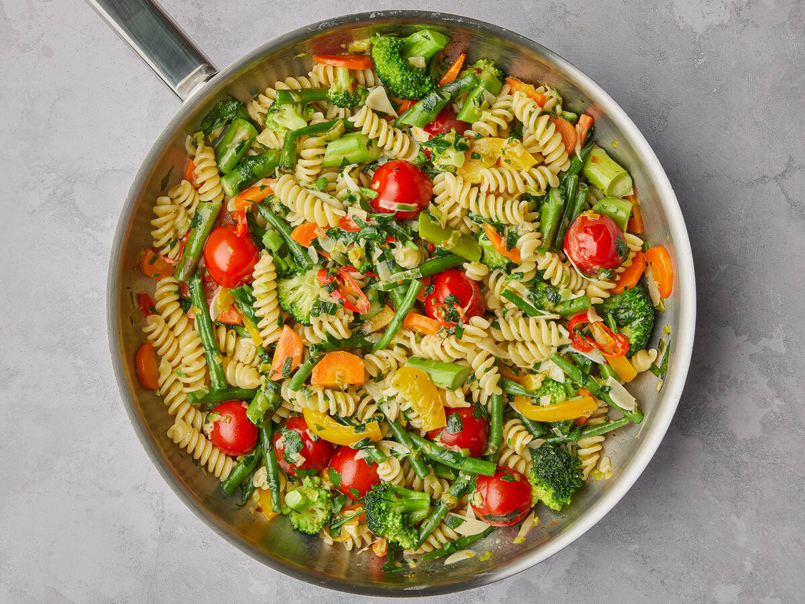

Pasta Primavera

Pasta primavera is a simple dish made with pasta and fresh vegetables.
Many people think it’s an Italian dish but it’s actually an American dish
which was created by chef Sirio Maccioni and two assisting chefs (the original used cream cheese).
It was first served at a restaurant in New York City then a recipe was published
a few years later in New York Times helping bring the dish to fame.
Ingredients
- Penne pasta
- Salt
- Olive oi
- Fresh veggies uncluding red onion, carrot, broccoli, bell pepper, yellow squash, zucchini, tomatoes and garlic
- 2 teaspoon dried Italian seasoning
- 2 tablespoon fresh lemon juice
- 2 tablespoon chopped fresh parsley
- 1/2 cup shredded parmigiano, devided
Instructions
- Cook the pasta according to package directions.
- Heat olive oil over medium-high heat. Add red onion and carrot and saute 2 minutes.
- Add broccoli and bell pepper then saute 2 minutes. Add squash and zucchini then saute 2 - 3 minutes or until veggies have nearly softened.
- Add garlic, tomatoes, adn Italian seasoning and saute 2 minutes longer.
- Pour veggies into a serving bowl, add drained pasta, drizzle lemon juice, season with a little more salt as needed.
- Toss in 1/4 cup parmigiano and parsley then serve with remaining parmesan on top.
Source: cookingclassy.com/pasta-primavera/